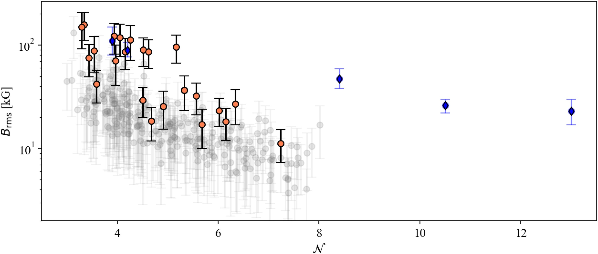

What is it?
Asteroseismology is the study of how stars pulsate. It turns out that most, if not all, stars pulsate -- at least to some degree. These oscillations are the product of waves being generated inside the stellar interior and being reflected and refracted at different layers. This results in both incoming and outgoing waves which interfere, producing trapped standing waves. These trapped waves cause the star to pulsate.
The properties of trapped waves depend on the thing that they are trapped in. That means the properties of stellar pulsations are defined by the properties of their host star. As asteroseismologists we use this fact to learn about what is going on inside stars. Surprisingly, we can actually collect observational data for the pulsations of a large number of stars. As the star periodically expands and contracts, it brightens and dims. High precision telescopes can pick up on this change in brightness, allowing us to actually measure the way a large number of stars pulsate.
What has it taught us?
Unlike most data that we collect for stars, asteroseismic data is directly sensitive to conditions deep below the surfaces of stars. As the deep interior of stars evolve much more rapidly than their surface properties this data can be used to learn how old stars are to very high precision. While age is a popular product of asteroseismic analysis, we've learnt a great deal more about how stars work. One recent example is related to magnetic fields. While we know magnetism is a phenomena which happens in the outer layers of the sun and many other stars, until the late 2010s we had no direct measurement of it deep below the surface. In the last 10 years asteroseismology has, for the first time, revealed that strong magnetic fields exist in the cores of some stars -- tens of millions of kilometers below their surfaces.
First author results:

Title: Asteroseismic signatures of core magnetism and rotation in hundreds of low-luminosity red giants.
Abstract: Red Giant stars host solar-like oscillations which have mixed character, being sensitive to conditions both in the outer convection zone and deep within the interior. The properties of these modes are sensitive to both core rotation and magnetic fields. While asteroseismicstudiesoftheformerhavebeendoneonalargescale,studiesofthelatterarecurrentlylimitedtotensofstars.We aim to produce the first large catalogue of both magnetic and rotational perturbations. We jointly constrain these parameters by devising an automated method for fitting the power spectra directly. We successfully apply the method to 302 low-luminosity red giants. We find a clear bimodality in core rotation rate. The primary peak is at 𝛿𝜈rot = 0.32 𝜇Hz, and the secondary at 𝛿𝜈rot = 0.47 𝜇Hz. Combining our results with literature values, we find that the percentage of stars rotating much more rapidly than the population average increases with evolutionary state. We measure magnetic splittings of 2𝜎 significance in 23 stars. While the most extreme magnetic splitting values appear in stars with masses > 1.1M⊙, implying they formerly hosted a convective core, a small but statistically significant magnetic splitting is measured at lower masses. Asymmetry between the frequencies of a rotationally split multiplet has previously been used to diagnose the presence of a magnetic perturbation. We find that of the stars with a significant detection of magnetic perturbation, 43% do not show strong asymmetry. We find no strong evidence of correlation between the rotation and magnetic parameters.
Title: A Catalogue of Solar-Like Oscillators Observed by TESS in 20-second and 20-second Cadence
Abstract: Context. The Transiting Exoplanet Survey Satellite (TESS) mission has provided photometric light curves for stars across nearly the entire sky. This allows for the application of asteroseismology to a pool of potential solar-like oscillators that is unprecedented in size. Aims. We aim to produce a catalogue of solar-like oscillators observed by TESS in the 120-second and 20-second cadence modes. The catalogue is intended to highlight stars oscillating at frequencies above the TESS 30-minute cadence Nyquist frequency with the purpose of encompassing the main sequence and sub-giant evolutionary phases. We aim to provide estimates for the global asteroseismic parameters νmax and ∆ν. Methods. We apply a new probabilistic detection algorithm to the 120-second and 20-second light curves of over 250,000 stars. This algorithm flags targets that show characteristic signatures of solar-like oscillations. We manually vet the resulting list of targets to confirm the presence of solar-like oscillations. Using the probability densities computed by the algorithm, we measure the global asteroseismic parameters νmax and ∆ν. Results. We produce a catalogue of 4,177 solar-like oscillators, reporting ∆νand νmax for 98% of the total star count. The asteroseismic data reveals vast coverage of the HR diagram, populating the red giant branch, the subgiant regime and extending toward the main- sequence. Conclusions. A crossmatch with external catalogs shows that 25 of the detected solar-like oscillators are a component of a spec- troscopic binary, and 28 are confirmed planet host stars. These results provide the potential for precise, independent asteroseismic constraints on these and any additional TESS targets of interest.